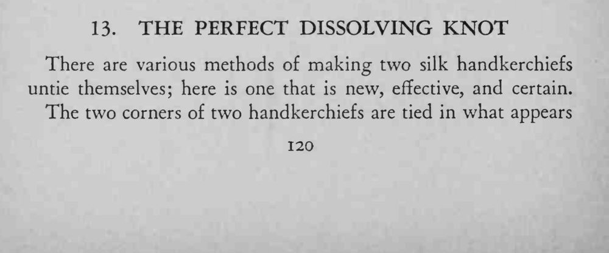
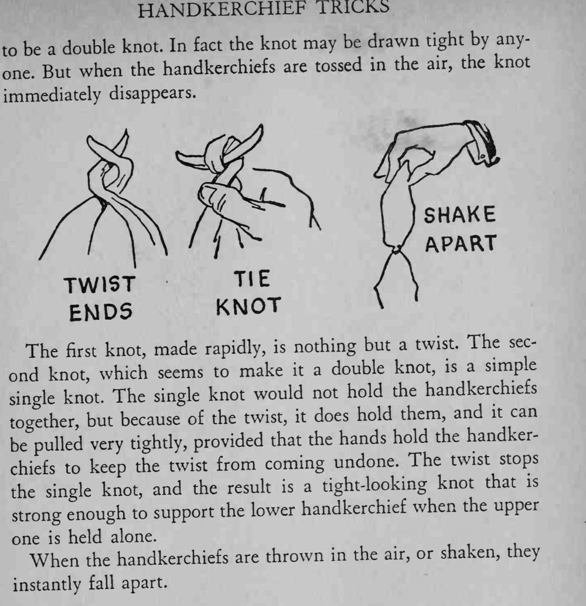

两条丝巾的两角被系成一个看似很紧的双结，抓住上面一条也拉不散；可一旦抛向空中，结立刻消失，两条丝巾分开。
拉紧时手不能松，否则扭转会提前散掉；抛起或抖动则让它立刻解开。


There are various methods of making two silk handkerchiefs untie themselves; here is one that is new, effective, and certain. The two corners of two handkerchiefs are tied in what appears be double knot. In fact the knot may be drawn tight by anyto a But when the handkerchiefs are tossed in the air, the knot one. immediately disappears. The knot, made rapidly, is nothing but a twist. The secfirst ond knot, which seems to make it a double knot, is a simple knot. The single knot would not hold the handkerchiefs single together, but because of the twist, it does hold them, and it can be pulled very tightly, provided that the hands hold the handkerkeep the twist from coming undone. The twist stops chiefs to the single knot, and the result is a tight-looking knot that is strong enough to support the lower handkerchief when the upper one is held alone. When the handkerchiefs are thrown in the air, or shaken, they instantly fall apart.